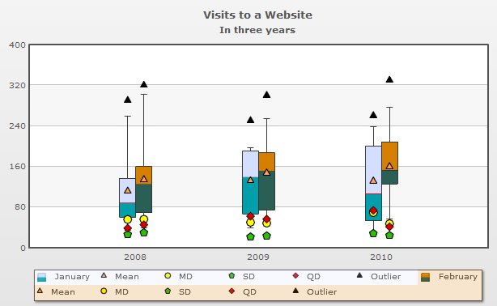
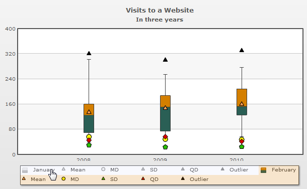
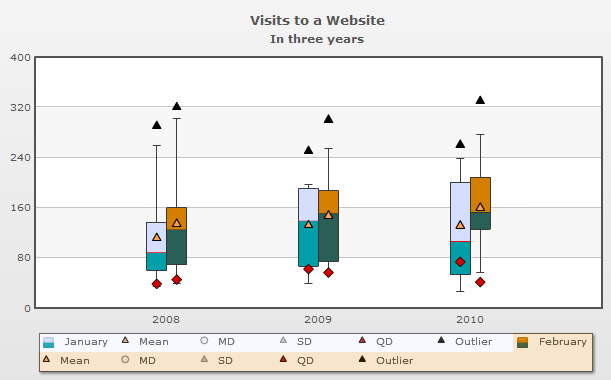

| Legend |
|
In Box and Whisker chart a new concept of legend has been introduced. Along with the dataset series name, the legend shows the icons of mean, mean deviation, standard deviation, quartile deviation and the outliers of every data plot. Each dataset is highlighted by different colors to easily differentiate between them and their icons. These legend icons are interactive to let user click and hide or show the desired set of values. A chart showing all the icons in two datasets along with their legend is given below:  In the above screenshot:
You can hide all the sub icons of the legend items setting showDetailedLegend='0' in <chart> element. |
| Interactivity |
|
To show or hide any dataset in the chart you can click on the main legend items or the primary legend icons. A sample chart with one hidden datasets -January (after mouse click on the legend item) is given below:  In the above screen shot, the dataset January is hidden from the chart canvas. In the legend box, the complete legend item for the dataset is grayed out. To show the dataset again, click on the main dataset icon. You can also click on the sub icons of a dataset from the legend to show or hide the respective points on the chart. In the screen shot below we are hiding the mean deviation and the standard deviation icons of both the datasets. So, the icons in the legend are grayed out from both the datasets.  |